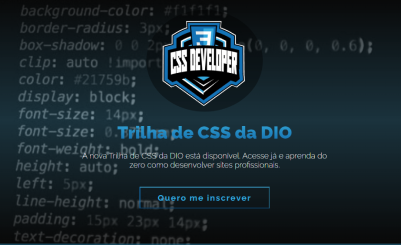
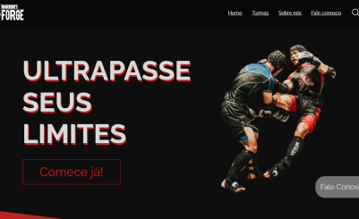
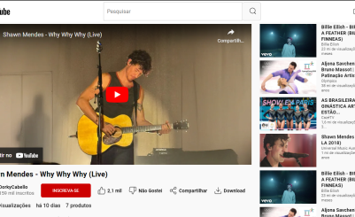
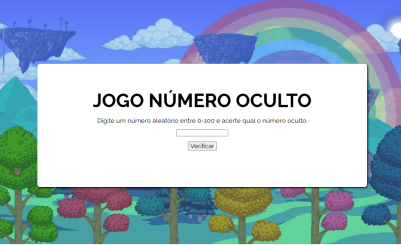

PROJETOS

Primeira atividade de CSS - DIO
Após o fim do primeiro módulo 1 de CSS3 da DIO foi proposto essa atividade de criar uma landingpage.
Tecnologias utilizadas:

Warrior’s Forge - LandingPage
Trabalho em grupo feito na disciplina de Programação Web-Front end.
Tecnologias utilizadas:

Clone do YouTube (Antigo)
Após finalizar os conceitos sobre display flex, foi proposto uma atividade para clonar o Youtube.
Tecnologias utilizadas:

Jogo Número Oculto
Atividade feita na disciplina de programação Web-FrontEnd da faculdade.
Tecnologias utilizadas: